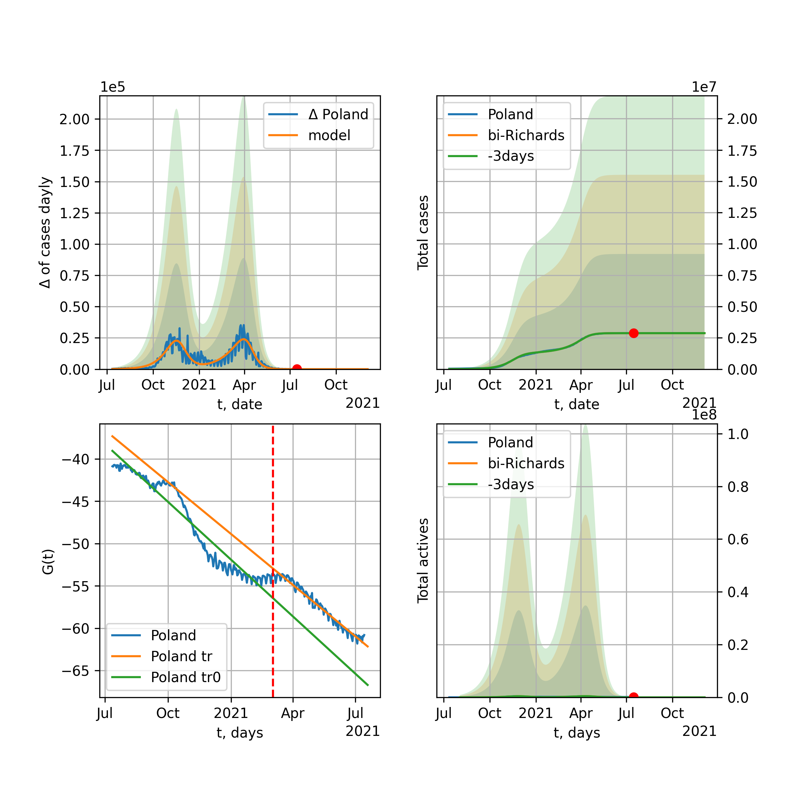
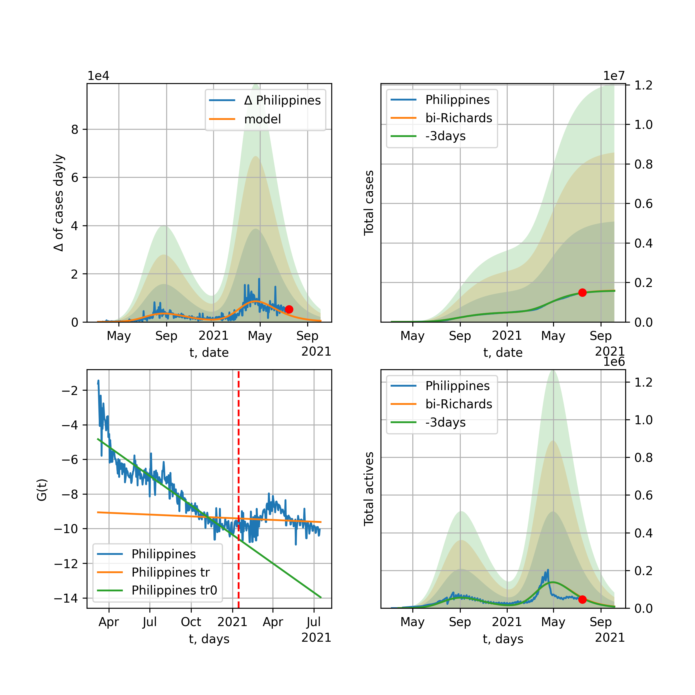
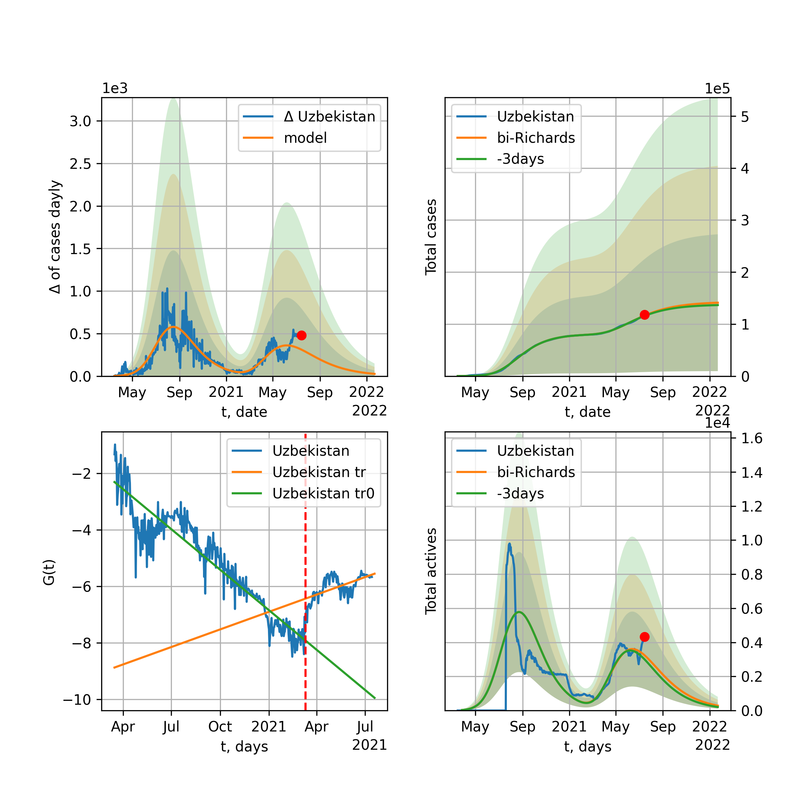

World

World data at: 2021-03-07
10 day model MAPE: 0.000774
model: bi-Richards
coeffs: [4.75638281e+07 8.53216169e-01 1.18752512e+02 2.74907418e-02]
rational stdev: 0.150260
forecast at the end of period: +556 days
deltaDaycases: 3758
total cases: 154857308 ± 23268854
total death: 3435436 ± 1548625
bi-Richards approximation splitting point: 270
actives k: 33
trend coefficient of determination: 0.742075
intercept: -3.480887
slope: -0.007819
trend coefficient of determination: 0.774612
intercept: -1.060138
slope: -0.014762
European Union

European Union data at: 2021-03-07
10 day model MAPE: 0.007764
model: bi-Richards
coeffs: [2.27704652e+07 2.05718882e+00 2.17184552e+01 9.25851135e-03]
rational stdev: 0.262237
forecast at the end of period: +111 days
deltaDaycases: 9346
total cases: 25577877 ± 6707468
total death: 620678 ± 488294
bi-Richards approximation splitting point: 230
actives k: 35
trend coefficient of determination: 0.204289
intercept: -3.527307
slope: -0.009075
trend coefficient of determination: 0.777755
intercept: -0.245041
slope: -0.015147
Brazil

Brazil data at: 2021-03-07
10 day model MAPE: 0.008628
model: bi-Richards
coeffs: [7.19043019e+06 1.60897823e+00 7.77840629e+01 1.11346016e-02]
rational stdev: 0.235215
forecast at the end of period: +146 days
deltaDaycases: 4694
total cases: 13490063 ± 3173067
total death: 325029 ± 229355
bi-Richards approximation splitting point: 220
actives k: 17
trend coefficient of determination: 0.514393
intercept: -2.064387
slope: -0.014769
trend coefficient of determination: 0.051604
intercept: -6.222635
slope: 0.002337
Russia

Russia data at: 2021-03-07
10 day model MAPE: 0.001246
model: bi-Richards
coeffs: [3.70118581e+06 9.89052537e-02 1.76607174e+02 2.25697724e-01]
rational stdev: 0.149675
forecast at the end of period: +216 days
deltaDaycases: 99
total cases: 4830486 ± 723005
total death: 99745 ± 44788
bi-Richards approximation splitting point: 200
actives k: 26
trend coefficient of determination: 0.742246
intercept: -5.254247
slope: -0.019389
trend coefficient of determination: 0.914306
intercept: -4.484544
slope: -0.014273
USA

USA data at: 2021-03-07
10 day model MAPE: 0.002724
model: bi-Richards
coeffs: [2.12488928e+07 1.23524624e-01 2.32899686e+02 2.54074972e-01]
rational stdev: 0.222424
forecast at the end of period: +279 days
deltaDaycases: 61
total cases: 31981621 ± 7113482
total death: 579229 ± 386503
bi-Richards approximation splitting point: 230
actives k: 52
trend coefficient of determination: 0.730153
intercept: -5.650545
slope: -0.018532
trend coefficient of determination: 0.802398
intercept: -3.952438
slope: -0.017614
Spain

Spain data at: 2021-03-05
10 day model MAPE: 0.004447
model: bi-Richards
coeffs: [1.44372469e+06 8.67237776e-02 3.15751959e+02 9.74467047e-01]
rational stdev: 0.427821
forecast at the end of period: +78 days
deltaDaycases: 3
total cases: 3158914 ± 1351448
total death: 71361 ± 91589
bi-Richards approximation splitting point: 300
actives k: 52
trend coefficient of determination: 0.343281
intercept: -15.466517
slope: -0.013300
trend coefficient of determination: 0.686188
intercept: -7.528664
slope: -0.035998
Italy

Italy data at: 2021-03-07
10 day model MAPE: 0.006944
model: bi-Richards
coeffs: [1.56471971e+06 1.23252757e+01 1.29441738e+02 3.51352405e-03]
rational stdev: 0.329524
forecast at the end of period: +356 days
deltaDaycases: 1034
total cases: 10757081 ± 3544721
total death: 349926 ± 345927
bi-Richards approximation splitting point: 260
actives k: 28
trend coefficient of determination: 0.098521
intercept: -4.056893
slope: -0.007221
trend coefficient of determination: 0.629453
intercept: -0.401817
slope: -0.014105
United Kingdom

United Kingdom data at: 2021-03-07
10 day model MAPE: 0.020444
model: bi-Richards
coeffs: [4.55226896e+06 4.99582925e-02 2.03164693e+02 5.45775148e-01]
rational stdev: 0.187098
forecast at the end of period: +286 days
deltaDaycases: 7
total cases: 4966040 ± 929134
total death: 146562 ± 82264
bi-Richards approximation splitting point: 230
actives k: 48
trend coefficient of determination: 0.007869
intercept: -12.127670
slope: 0.000969
trend coefficient of determination: 0.964287
intercept: -0.939106
slope: -0.046260
France

France data at: 2021-03-07
10 day model MAPE: 0.003371
model: bi-Richards
coeffs: [1.67384151e+06 3.33214455e-01 1.79588464e+02 1.55322305e-01]
rational stdev: 0.230489
forecast at the end of period: +181 days
deltaDaycases: 14
total cases: 6220221 ± 1433691
total death: 141116 ± 97577
bi-Richards approximation splitting point: 225
actives k: 105
trend coefficient of determination: 0.003874
intercept: -6.300434
slope: -0.001237
trend coefficient of determination: 0.220804
intercept: -4.395516
slope: -0.010113
Germany

Germany data at: 2021-03-07
10 day model MAPE: 0.002631
model: bi-Richards
coeffs: [2.44550624e+06 9.06238884e-02 2.27337929e+02 3.13767546e-01]
rational stdev: 0.183296
forecast at the end of period: +90 days
deltaDaycases: 432
total cases: 2662116 ± 487956
total death: 76968 ± 42323
bi-Richards approximation splitting point: 215
actives k: 17
trend coefficient of determination: 0.348749
intercept: -7.031629
slope: -0.015887
trend coefficient of determination: 0.857473
intercept: -2.928708
slope: -0.020919
Turkey

Turkey data at: 2021-03-07
10 day model MAPE: 0.011311
model: bi-Richards
coeffs: [1.52902254e+06 1.18691621e-01 2.28969700e+02 3.35098056e-01]
rational stdev: 0.202885
forecast at the end of period: +146 days
deltaDaycases: 110
total cases: 2764830 ± 560943
total death: 28867 ± 17570
bi-Richards approximation splitting point: 232
actives k: 17
trend coefficient of determination: 0.550827
intercept: -7.240093
slope: -0.015813
trend coefficient of determination: 0.709039
intercept: -5.124420
slope: -0.016904
Iran

Iran data at: 2021-03-07
10 day model MAPE: 0.012928
model: bi-Richards
coeffs: [1.18136026e+06 2.31960189e+00 6.29562313e+01 9.32829537e-03]
rational stdev: 0.224155
forecast at the end of period: +300 days
deltaDaycases: 18
total cases: 1787452 ± 400665
total death: 64198 ± 43170
bi-Richards approximation splitting point: 200
actives k: 25
trend coefficient of determination: 0.765055
intercept: -2.265256
slope: -0.017879
trend coefficient of determination: 0.298114
intercept: -3.724933
slope: -0.004563
Canada

Canada data at: 2021-03-07
10 day model MAPE: 0.001308
model: bi-Richards
coeffs: [8.23929100e+05 6.48758361e-02 2.55024947e+02 4.31166368e-01]
rational stdev: 0.258411
forecast at the end of period: +482 days
deltaDaycases: 0
total cases: 974913 ± 251927
total death: 24454 ± 18957
bi-Richards approximation splitting point: 240
actives k: 17
trend coefficient of determination: 0.551288
intercept: -6.375490
slope: -0.022698
trend coefficient of determination: 0.840107
intercept: -4.514284
slope: -0.019370
South Africa

South Africa data at: 2021-03-07
10 day model MAPE: 0.002983
model: bi-Richards
coeffs: [8.20316735e+05 4.27292705e-02 3.10405616e+02 2.92674498e+00]
rational stdev: 1.003213
forecast at the end of period: +6 days
deltaDaycases: 40
total cases: 1505874 ± 1510712
total death: 50171 ± 150996
bi-Richards approximation splitting point: 235
actives k: 17
trend coefficient of determination: 0.871263
intercept: -19.414579
slope: -0.138255
trend coefficient of determination: 0.604706
intercept: -37.404682
slope: -0.029308
Belgium

Belgium data at: 2021-03-07
10 day model MAPE: 0.240002
model: bi-Richards
coeffs: [4.47008635e+04 1.38688548e-01 2.70459661e+01 1.17357859e+00]
rational stdev: 0.223081
forecast at the end of period: +251 days
deltaDaycases: 0
total cases: 620696 ± 138465
total death: 17537 ± 11736
bi-Richards approximation splitting point: 282
actives k: 61
trend coefficient of determination: 0.451180
intercept: -14.496853
slope: -0.023099
trend coefficient of determination: 0.036991
intercept: -20.492796
slope: -0.003609
Peru

Peru data at: 2021-03-07
10 day model MAPE: 0.005287
model: bi-Richards
coeffs: [4.10712714e+05 3.91854962e+00 2.33740134e+02 1.15050572e-02]
rational stdev: 0.308435
forecast at the end of period: +76 days
deltaDaycases: 294
total cases: 1492051 ± 460201
total death: 52072 ± 48182
bi-Richards approximation splitting point: 265
actives k: 21
trend coefficient of determination: 0.905360
intercept: -1.947773
slope: -0.017543
trend coefficient of determination: 0.609027
intercept: -11.149593
slope: 0.016492
Netherlands

Netherlands data at: 2021-03-07
10 day model MAPE: 0.001793
model: bi-Richards
coeffs: [1.21869033e+06 1.39044174e+00 1.96108658e+01 1.31672975e-02]
rational stdev: 0.210986
forecast at the end of period: +216 days
deltaDaycases: 69
total cases: 1289167 ± 271995
total death: 18223 ± 11534
bi-Richards approximation splitting point: 205
actives k: 35
trend coefficient of determination: 0.152619
intercept: -3.753168
slope: -0.010854
trend coefficient of determination: 0.854583
intercept: -0.189393
slope: -0.016038
India

India data at: 2021-03-07
10 day model MAPE: 0.001854
model: bi-Richards
coeffs: [ 7.16165771e+06 1.98521258e+00 -1.37588172e+01 1.15605372e-02]
rational stdev: 0.191659
forecast at the end of period: +216 days
deltaDaycases: 128
total cases: 11356004 ± 2176474
total death: 159670 ± 91806
bi-Richards approximation splitting point: 92
actives k: 13
trend coefficient of determination: 0.597227
intercept: -1.915943
slope: -0.016935
trend coefficient of determination: 0.959987
intercept: -1.495917
slope: -0.015997
Switzerland

Switzerland data at: 2021-03-05
10 day model MAPE: 0.003181
model: bi-Richards
coeffs: [5.28916823e+05 4.07358973e+00 8.05524366e+01 7.33807768e-03]
rational stdev: 0.208069
forecast at the end of period: +43 days
deltaDaycases: 159
total cases: 567383 ± 118054
total death: 10131 ± 6323
bi-Richards approximation splitting point: 218
actives k: 43
trend coefficient of determination: 0.074539
intercept: -4.535438
slope: -0.007096
trend coefficient of determination: 0.920985
intercept: 2.378026
slope: -0.024970
Ecuador

Ecuador data at: 2021-03-07
10 day model MAPE: 0.012095
model: bi-Richards
coeffs: [ 3.02605271e+05 7.31997991e-01 -2.36238137e+02 1.27412779e-02]
rational stdev: 0.084392
forecast at the end of period: +76 days
deltaDaycases: 410
total cases: 319618 ± 26973
total death: 17406 ± 4406
bi-Richards approximation splitting point: 80
actives k: 26
trend coefficient of determination: 0.274723
intercept: -2.242679
slope: -0.047437
trend coefficient of determination: 0.121647
intercept: -4.400941
slope: -0.004685
Portugal

Portugal data at: 2021-03-07
10 day model MAPE: 0.000179
model: bi-Richards
coeffs: [1.78317928e+05 6.90130262e-01 3.10637667e+02 2.43354069e-01]
rational stdev: 0.818363
forecast at the end of period: +76 days
deltaDaycases: 3
total cases: 816663 ± 668327
total death: 16674 ± 40936
bi-Richards approximation splitting point: 322
actives k: 21
trend coefficient of determination: 0.279835
intercept: -5.528555
slope: -0.008367
trend coefficient of determination: 0.917049
intercept: 19.920821
slope: -0.083070
Saudi Arabia

Saudi Arabia data at: 2021-03-07
10 day model MAPE: 0.002495
model: bi-Richards
coeffs: [ 5.07538516e+04 1.77668530e+00 -1.78733911e+01 7.71463419e-03]
rational stdev: 0.099753
forecast at the end of period: +76 days
deltaDaycases: 155
total cases: 394509 ± 39353
total death: 6780 ± 2028
bi-Richards approximation splitting point: 300
actives k: 17
trend coefficient of determination: 0.978208
intercept: -1.975270
slope: -0.021789
trend coefficient of determination: 0.722954
intercept: -12.322527
slope: 0.015256
Sweden

Sweden data at: 2021-03-05
10 day model MAPE: 0.009365
model: bi-Richards
coeffs: [6.33335240e+05 2.05273622e+00 1.14901142e+02 1.26005890e-02]
rational stdev: 0.193104
forecast at the end of period: +113 days
deltaDaycases: 107
total cases: 730847 ± 141129
total death: 13874 ± 8037
bi-Richards approximation splitting point: 240
actives k: 35
trend coefficient of determination: 0.711159
intercept: -2.294166
slope: -0.018504
trend coefficient of determination: 0.705360
intercept: -0.174483
slope: -0.014632
Pakistan

Pakistan data at: 2021-03-07
10 day model MAPE: 0.003944
model: bi-Richards
coeffs: [2.89812006e+05 2.56175855e+00 8.95579167e+01 1.04715579e-02]
rational stdev: 2.072742
forecast at the end of period: +111 days
deltaDaycases: 39
total cases: 609849 ± 1264061
total death: 13623 ± 84710
bi-Richards approximation splitting point: 260
actives k: 26
trend coefficient of determination: 0.668566
intercept: -2.623692
slope: -0.016612
trend coefficient of determination: 0.786483
intercept: -1.492501
slope: -0.013975
Ireland

Ireland data at: 2021-03-07
10 day model MAPE: 0.010629
model: bi-Richards
coeffs: [1.83438075e+05 2.71950876e-02 2.99998454e+02 6.58505220e+00]
rational stdev: 0.239110
forecast at the end of period: +111 days
deltaDaycases: 0
total cases: 215536 ± 51536
total death: 4269 ± 3062
bi-Richards approximation splitting point: 271
actives k: 61
trend coefficient of determination: 0.623761
intercept: -66.897935
slope: -0.048287
trend coefficient of determination: 0.879696
intercept: -46.279993
slope: -0.123430
Mexico

Mexico data at: 2021-03-07
10 day model MAPE: 0.003895
model: bi-Richards
coeffs: [1.04985499e+06 8.29861822e-02 2.79956339e+02 4.34523844e-01]
rational stdev: 0.261287
forecast at the end of period: +426 days
deltaDaycases: 4
total cases: 2366162 ± 618248
total death: 211876 ± 166081
bi-Richards approximation splitting point: 260
actives k: 17
trend coefficient of determination: 0.860032
intercept: -5.137793
slope: -0.028719
trend coefficient of determination: 0.493691
intercept: -6.708812
slope: -0.014851
Singapore

Singapore data at: 2021-03-07
10 day model MAPE: 0.000736
model: bi-Richards
coeffs: [ 8.15363089e+03 6.77855212e-01 -4.60942895e+02 8.13916501e-03]
rational stdev: 0.611858
forecast at the end of period: +76 days
deltaDaycases: 16
total cases: 61219 ± 37457
total death: 29 ± 53
bi-Richards approximation splitting point: 240
actives k: 26
trend coefficient of determination: 0.824663
intercept: -1.836481
slope: -0.029146
trend coefficient of determination: 0.134001
intercept: -11.117044
slope: 0.008069
Chile

Chile data at: 2021-03-07
10 day model MAPE: 0.003571
model: bi-Richards
coeffs: [5.61896803e+05 2.72073533e-01 1.90926345e+02 6.84726560e-02]
S.Korea scenario coeffs: [0.36242246, 2.56241634, 1.84890887, 0.13324732]
rational stdev: 0.231068
forecast at the end of period: +496 days
deltaDaycases: 70
total cases: 1111227 ± 256768
total death: 27368 ± 18971
bi-Richards approximation splitting point: 285
actives k: 10
trend coefficient of determination: 0.881535
intercept: -2.479535
slope: -0.018960
trend coefficient of determination: 0.057670
intercept: -7.160977
slope: 0.002643
Israel

Israel data at: 2021-03-07
10 day model MAPE: 0.009704
model: bi-Richards
coeffs: [5.12508718e+05 5.53127820e-02 2.96981060e+02 1.12077285e+00]
rational stdev: 0.301723
forecast at the end of period: +41 days
deltaDaycases: 148
total cases: 817162 ± 246556
total death: 6005 ± 5435
bi-Richards approximation splitting point: 248
actives k: 11
trend coefficient of determination: 0.672053
intercept: -13.664719
slope: -0.025718
trend coefficient of determination: 0.233824
intercept: -16.078034
slope: -0.012158
Austria

Austria data at: 2021-03-07
10 day model MAPE: 0.011541
model: bi-Richards
coeffs: [4.00988508e+05 3.95721534e+00 1.11490586e+02 8.47711584e-03]
rational stdev: 0.291787
forecast at the end of period: +62 days
deltaDaycases: 116
total cases: 457864 ± 133598
total death: 8397 ± 7350
bi-Richards approximation splitting point: 210
actives k: 13
trend coefficient of determination: 0.160078
intercept: -3.675354
slope: -0.010981
trend coefficient of determination: 0.661153
intercept: -0.188963
slope: -0.015671
Belarus

Belarus data at: 2021-03-07
10 day model MAPE: 0.001813
model: bi-Richards
coeffs: [2.87771420e+05 2.08925665e-01 1.30777534e+02 8.83291862e-02]
rational stdev: 0.105422
forecast at the end of period: +286 days
deltaDaycases: 7
total cases: 361862 ± 38148
total death: 2495 ± 789
bi-Richards approximation splitting point: 220
actives k: 21
trend coefficient of determination: 0.531535
intercept: -3.763864
slope: -0.017331
trend coefficient of determination: 0.736509
intercept: -2.911089
slope: -0.010710
Japan

Japan data at: 2021-03-07
10 day model MAPE: 0.003781
model: bi-Richards
coeffs: [2.78805059e+05 5.78755620e-02 3.42392310e+02 1.41615225e+00]
rational stdev: 0.399852
forecast at the end of period: +188 days
deltaDaycases: 8
total cases: 449109 ± 179577
total death: 8417 ± 10096
bi-Richards approximation splitting point: 310
actives k: 11
trend coefficient of determination: 0.702356
intercept: -12.467013
slope: -0.035390
trend coefficient of determination: 0.909257
intercept: -7.406525
slope: -0.043053
China

China data at: 2021-03-07
10 day model MAPE: 0.000382
model: bi-Richards
coeffs: [ 1.74301617e+04 5.52396739e-01 -6.64603118e+02 8.49781060e-03]
rational stdev: 0.061731
forecast at the end of period: +76 days
deltaDaycases: 25
total cases: 91979 ± 5678
total death: 4738 ± 877
bi-Richards approximation splitting point: 120
actives k: 17
trend coefficient of determination: 0.817972
intercept: -2.279526
slope: -0.076392
trend coefficient of determination: 0.097914
intercept: -9.748831
slope: 0.003841
Qatar

Qatar data at: 2021-03-07
10 day model MAPE: 0.008891
model: bi-Richards
coeffs: [ 8.44649166e+04 8.16023084e-01 -2.91177877e+02 1.01075939e-02]
S.Korea scenario coeffs: [0.36242246, 2.56241634, 1.84890887, 0.13324732]
rational stdev: 0.071047
forecast at the end of period: +146 days
deltaDaycases: 97
total cases: 184666 ± 13119
total death: 289 ± 61
bi-Richards approximation splitting point: 144
actives k: 17
trend coefficient of determination: 0.918167
intercept: -1.937820
slope: -0.030842
trend coefficient of determination: 0.008136
intercept: -6.658912
slope: 0.000667
Poland

Poland data at: 2021-03-07
10 day model MAPE: 0.015682
model: bi-Richards
coeffs: [1.54021711e+06 5.19782670e+00 8.53954647e+01 6.03658485e-03]
rational stdev: 0.251745
forecast at the end of period: +146 days
deltaDaycases: 114
total cases: 1713241 ± 431299
total death: 43224 ± 32644
bi-Richards approximation splitting point: 200
actives k: 21
trend coefficient of determination: 0.681905
intercept: -2.339380
slope: -0.015999
trend coefficient of determination: 0.620448
intercept: 0.104227
slope: -0.016530
UAE

UAE data at: 2021-03-07
10 day model MAPE: 0.005561
model: bi-Richards
coeffs: [ 3.60351992e+06 1.06405358e-01 -1.45834226e+02 4.35910742e-02]
rational stdev: 0.108276
forecast at the end of period: +776 days
deltaDaycases: 1039
total cases: 3428975 ± 371274
total death: 11033 ± 3583
bi-Richards approximation splitting point: 128
actives k: 11
trend coefficient of determination: 0.943997
intercept: -2.376922
slope: -0.029681
trend coefficient of determination: 0.076206
intercept: -5.747450
slope: 0.001740
Romania

Romania data at: 2021-03-07
10 day model MAPE: 0.009929
model: bi-Richards
coeffs: [6.63944853e+05 3.14783506e+00 9.46848185e+01 9.37168329e-03]
rational stdev: 0.266699
forecast at the end of period: +69 days
deltaDaycases: 113
total cases: 813364 ± 216923
total death: 20523 ± 16420
bi-Richards approximation splitting point: 220
actives k: 17
trend coefficient of determination: 0.426856
intercept: -2.795639
slope: -0.009877
trend coefficient of determination: 0.767205
intercept: 0.128115
slope: -0.017306
Panama

Panama data at: 2021-03-07
10 day model MAPE: 0.003605
model: bi-Richards
coeffs: [2.03386573e+05 5.62476631e-02 2.88641377e+02 1.14136608e+00]
rational stdev: 0.224623
forecast at the end of period: +48 days
deltaDaycases: 13
total cases: 344629 ± 77411
total death: 5919 ± 3988
bi-Richards approximation splitting point: 229
actives k: 17
trend coefficient of determination: 0.827738
intercept: -10.077881
slope: -0.044722
trend coefficient of determination: 0.703977
intercept: -12.725651
slope: -0.022093
Ukraine

Ukraine data at: 2021-03-07
10 day model MAPE: 0.016387
model: bi-Richards
coeffs: [ 1.11717383e+06 9.86754404e-01 -2.54884192e+02 8.76802091e-03]
rational stdev: 0.044815
forecast at the end of period: +286 days
deltaDaycases: 742
total cases: 1969367 ± 88257
total death: 37976 ± 5105
bi-Richards approximation splitting point: 185
actives k: 35
trend coefficient of determination: 0.000015
intercept: -4.097610
slope: -0.000016
trend coefficient of determination: 0.688046
intercept: -0.666795
slope: -0.018284
Indonesia

Indonesia data at: 2021-03-07
10 day model MAPE: 0.001139
model: bi-Richards
coeffs: [6.39132304e+05 7.24125913e-02 3.02959287e+02 6.87285731e-01]
rational stdev: 0.211111
forecast at the end of period: +384 days
deltaDaycases: 12
total cases: 1619423 ± 341878
total death: 43742 ± 27703
bi-Richards approximation splitting point: 260
actives k: 17
trend coefficient of determination: 0.861234
intercept: -8.056862
slope: -0.025738
trend coefficient of determination: 0.612361
intercept: -9.998975
slope: -0.013428
Bangladesh

Bangladesh data at: 2021-03-07
10 day model MAPE: 0.002210
model: bi-Richards
coeffs: [1.34894503e+05 9.15095710e-02 2.33738081e+02 4.29506740e-01]
rational stdev: 0.165194
forecast at the end of period: +104 days
deltaDaycases: 5
total cases: 549872 ± 90835
total death: 8454 ± 4189
bi-Richards approximation splitting point: 210
actives k: 35
trend coefficient of determination: 0.829074
intercept: -4.410219
slope: -0.035725
trend coefficient of determination: 0.766946
intercept: -7.488310
slope: -0.015087
South_Korea

South Korea data at: 2021-03-07
10 day model MAPE: 0.007172
model: bi-Richards
coeffs: [4.33066647e+04 1.91158931e-01 2.47709752e+02 2.83363146e-01]
rational stdev: 0.067674
forecast at the end of period: +636 days
deltaDaycases: 0
total cases: 227764 ± 15413
total death: 4029 ± 817
bi-Richards approximation splitting point: 220
actives k: 26
trend coefficient of determination: 0.012387
intercept: -8.506312
slope: 0.001528
trend coefficient of determination: 0.190965
intercept: -5.867968
slope: -0.007195
Moldova

Moldova data at: 2021-03-07
10 day model MAPE: 0.021892
model: bi-Richards
coeffs: [1.02795911e+05 1.01433069e+00 6.51959066e+01 1.98705944e-02]
rational stdev: 0.242816
forecast at the end of period: +356 days
deltaDaycases: 9
total cases: 219428 ± 53280
total death: 4620 ± 3365
bi-Richards approximation splitting point: 190
actives k: 17
trend coefficient of determination: 0.659151
intercept: -2.372743
slope: -0.015414
trend coefficient of determination: 0.329038
intercept: -3.045490
slope: -0.007717
Denmark

Denmark data at: 2021-03-07
10 day model MAPE: 0.006434
model: bi-Richards
coeffs: [1.72696836e+05 3.87441195e-02 2.97462876e+02 2.04220486e+00]
rational stdev: 0.272023
forecast at the end of period: +76 days
deltaDaycases: 47
total cases: 213662 ± 58121
total death: 2365 ± 1930
bi-Richards approximation splitting point: 220
actives k: 17
trend coefficient of determination: 0.454308
intercept: -17.200584
slope: -0.050528
trend coefficient of determination: 0.954314
intercept: -14.523215
slope: -0.046606
Serbia

Serbia data at: 2021-03-07
10 day model MAPE: 0.019724
model: bi-Richards
coeffs: [4.20178264e+05 6.57956865e+00 1.14014169e+02 5.80199231e-03]
rational stdev: 0.220084
forecast at the end of period: +76 days
deltaDaycases: 23
total cases: 451851 ± 99445
total death: 4246 ± 2803
bi-Richards approximation splitting point: 195
actives k: 105
trend coefficient of determination: 0.574004
intercept: -2.894933
slope: -0.017515
trend coefficient of determination: 0.144068
intercept: -2.432147
slope: -0.008004
Kuwait

Kuwait data at: 2021-03-07
10 day model MAPE: 0.002964
model: bi-Richards
coeffs: [2.09295148e+05 3.24144345e-02 4.03527832e+02 8.18230128e+00]
rational stdev: 0.299281
forecast at the end of period: +125 days
deltaDaycases: 31
total cases: 377648 ± 113022
total death: 2121 ± 1904
bi-Richards approximation splitting point: 270
actives k: 17
trend coefficient of determination: 0.770497
intercept: -61.078699
slope: -0.196184
trend coefficient of determination: 0.526968
intercept: -100.586595
slope: -0.010752
Philippines

Philippines data at: 2021-03-07
10 day model MAPE: 0.010703
model: bi-Richards
coeffs: [ 5.85346427e+05 2.41643519e+00 -1.79849852e+02 6.05407206e-03]
rational stdev: 0.194428
forecast at the end of period: +132 days
deltaDaycases: 84
total cases: 584011 ± 113548
total death: 12297 ± 7172
bi-Richards approximation splitting point: 36
actives k: 17
trend coefficient of determination: 0.414102
intercept: -1.289448
slope: -0.058477
trend coefficient of determination: 0.745635
intercept: -2.947798
slope: -0.009295
Norway

Norway data at: 2021-03-07
10 day model MAPE: 0.011271
model: bi-Richards
coeffs: [7.47067534e+04 8.43336258e-02 2.10138094e+02 2.41154766e-01]
rational stdev: 0.177252
forecast at the end of period: +132 days
deltaDaycases: 17
total cases: 83390 ± 14781
total death: 703 ± 373
bi-Richards approximation splitting point: 200
actives k: 26
trend coefficient of determination: 0.407760
intercept: -4.891332
slope: -0.023226
trend coefficient of determination: 0.427131
intercept: -4.773879
slope: -0.008683
Czechia

Czechia data at: 2021-03-07
10 day model MAPE: 0.039316
model: bi-Richards
coeffs: [ 9.02724915e+05 2.45567392e+00 -1.23156770e+02 5.33226471e-03]
rational stdev: 0.672794
forecast at the end of period: +62 days
deltaDaycases: 1473
total cases: 1312016 ± 882717
total death: 21662 ± 43722
bi-Richards approximation splitting point: 215
actives k: 17
trend coefficient of determination: 0.058067
intercept: -3.633250
slope: -0.004749
trend coefficient of determination: 0.408985
intercept: -0.933642
slope: -0.012115
Colombia

Colombia data at: 2021-03-07
10 day model MAPE: 0.001101
model: bi-Richards
coeffs: [4.28425654e+05 1.77461360e-01 2.92978898e+02 5.49041799e-01]
rational stdev: 0.182100
forecast at the end of period: +216 days
deltaDaycases: 305
total cases: 2563318 ± 466779
total death: 68121 ± 37214
bi-Richards approximation splitting point: 300
actives k: 11
trend coefficient of determination: 0.877787
intercept: -6.172198
slope: -0.027069
trend coefficient of determination: 0.941087
intercept: -0.105476
slope: -0.040702
Australia

Australia data at: 2021-03-07
10 day model MAPE: 0.001392
model: bi-Richards
coeffs: [2.12714831e+04 3.37749975e-01 9.44298117e+01 1.74678012e-01]
rational stdev: 0.046810
forecast at the end of period: +62 days
deltaDaycases: 0
total cases: 28205 ± 1320
total death: 882 ± 123
bi-Richards approximation splitting point: 104
actives k: 26
trend coefficient of determination: 0.535591
intercept: -4.633807
slope: -0.043008
trend coefficient of determination: 0.723234
intercept: -3.826510
slope: -0.020774
Malaysia

Malaysia data at: 2021-03-07
10 day model MAPE: 0.004558
model: bi-Richards
coeffs: [1.69396046e+05 3.09737564e-02 3.39361087e+02 3.79139251e+00]
rational stdev: 0.608245
forecast at the end of period: +146 days
deltaDaycases: 2
total cases: 496942 ± 302262
total death: 1853 ± 3381
bi-Richards approximation splitting point: 260
actives k: 15
trend coefficient of determination: 0.489662
intercept: -29.935278
slope: -0.062351
trend coefficient of determination: 0.989670
intercept: -25.088119
slope: -0.075395
Dominican Republic

Dominican Republic data at: 2021-03-07
10 day model MAPE: 0.002932
model: bi-Richards
coeffs: [9.02342072e+04 2.44878008e-01 2.49593785e+02 1.68654736e-01]
rational stdev: 0.182331
forecast at the end of period: +76 days
deltaDaycases: 56
total cases: 259165 ± 47253
total death: 3379 ± 1848
bi-Richards approximation splitting point: 300
actives k: 35
trend coefficient of determination: 0.750027
intercept: -4.317661
slope: -0.013086
trend coefficient of determination: 0.692703
intercept: 3.042893
slope: -0.032670
Egypt

Egypt data at: 2021-03-07
10 day model MAPE: 0.011066
model: bi-Richards
coeffs: [8.81609617e+04 2.69847686e-02 3.10920673e+02 2.25305337e+00]
rational stdev: 0.136310
forecast at the end of period: +76 days
deltaDaycases: 2
total cases: 186473 ± 25418
total death: 10993 ± 4495
bi-Richards approximation splitting point: 170
actives k: 43
trend coefficient of determination: 0.951124
intercept: -16.524689
slope: -0.109477
trend coefficient of determination: 0.000306
intercept: -32.330717
slope: -0.000156
Finland

Finland data at: 2021-03-07
10 day model MAPE: 0.022316
model: bi-Richards
coeffs: [ 8.20408570e+04 1.15205614e+00 -7.00161837e+01 1.06593454e-02]
rational stdev: 0.116981
forecast at the end of period: +111 days
deltaDaycases: 111
total cases: 80257 ± 9388
total death: 991 ± 347
bi-Richards approximation splitting point: 210
actives k: 26
trend coefficient of determination: 0.378634
intercept: -3.199810
slope: -0.020257
trend coefficient of determination: 0.175149
intercept: -3.374336
slope: -0.004601
Morocco

Morocco data at: 2021-03-07
10 day model MAPE: 0.001380
model: bi-Richards
coeffs: [3.28502981e+05 3.14097424e+00 1.22423959e+02 1.24391672e-02]
rational stdev: 0.334878
forecast at the end of period: +76 days
deltaDaycases: 7
total cases: 486044 ± 162765
total death: 8678 ± 8718
bi-Richards approximation splitting point: 210
actives k: 11
trend coefficient of determination: 0.172255
intercept: -3.135531
slope: -0.006225
trend coefficient of determination: 0.897452
intercept: 2.291658
slope: -0.028000
Uzbekistan

Uzbekistan data at: 2021-03-07
10 day model MAPE: 0.001128
model: bi-Richards
coeffs: [1.89570643e+04 4.89376996e+00 3.72405923e+01 5.76425743e-03]
rational stdev: 0.372297
forecast at the end of period: +41 days
deltaDaycases: 4
total cases: 80048 ± 29801
total death: 620 ± 692
bi-Richards approximation splitting point: 200
actives k: 11
trend coefficient of determination: 0.460587
intercept: -2.617208
slope: -0.011041
trend coefficient of determination: 0.886982
intercept: -1.371567
slope: -0.018854
Argentina

Argentina data at: 2021-03-07
10 day model MAPE: 0.001871
model: bi-Richards
coeffs: [ 1.67973597e+06 1.12079269e+00 -1.74640289e+02 8.94504095e-03]
rational stdev: 0.217224
forecast at the end of period: +286 days
deltaDaycases: 530
total cases: 2839488 ± 616806
total death: 69850 ± 45519
bi-Richards approximation splitting point: 180
actives k: 16
trend coefficient of determination: 0.045410
intercept: -2.994980
slope: -0.004605
trend coefficient of determination: 0.711080
intercept: -2.111885
slope: -0.011423
Algeria

Algeria data at: 2021-03-07
10 day model MAPE: 0.004720
model: bi-Richards
coeffs: [5.99966342e+04 3.56763322e+00 1.03843749e+02 1.05182575e-02]
rational stdev: 0.095146
forecast at the end of period: +111 days
deltaDaycases: 0
total cases: 112729 ± 10725
total death: 2973 ± 848
bi-Richards approximation splitting point: 220
actives k: 35
trend coefficient of determination: 0.738563
intercept: -3.170605
slope: -0.011826
trend coefficient of determination: 0.903302
intercept: 0.295158
slope: -0.021630
Luxembourg

Luxembourg data at: 2021-03-07
10 day model MAPE: 0.011582
model: bi-Richards
coeffs: [5.03926103e+04 3.61812790e-02 2.58404933e+02 1.33953575e+00]
rational stdev: 0.183710
forecast at the end of period: +132 days
deltaDaycases: 0
total cases: 53654 ± 9856
total death: 627 ± 345
bi-Richards approximation splitting point: 105
actives k: 17
trend coefficient of determination: 0.740011
intercept: -9.453312
slope: -0.104988
trend coefficient of determination: 0.718374
intercept: -12.967241
slope: -0.021401
Thailand

Thailand data at: 2021-03-07
10 day model MAPE: 0.009114
model: bi-Richards
coeffs: [2.22542664e+04 5.12653198e-02 2.96275294e+02 4.03082489e+00]
rational stdev: 0.046534
forecast at the end of period: +76 days
deltaDaycases: 0
total cases: 25977 ± 1208
total death: 83 ± 11
bi-Richards approximation splitting point: 230
actives k: 17
trend coefficient of determination: 0.110840
intercept: -38.669442
slope: -0.007286
trend coefficient of determination: 0.879555
intercept: -14.556134
slope: -0.097870
Hungary

Hungary data at: 2021-03-07
10 day model MAPE: 0.039539
model: bi-Richards
coeffs: [2.41079325e+05 3.74574203e+00 5.75742994e+01 6.75345336e-03]
rational stdev: 11.320755
forecast at the end of period: +111 days
deltaDaycases: 75
total cases: 470361 ± 5324852
total death: 16020 ± 544075
bi-Richards approximation splitting point: 270
actives k: 43
trend coefficient of determination: 0.087307
intercept: -5.271044
slope: 0.004903
trend coefficient of determination: 0.366484
intercept: -13.295877
slope: 0.026131
Greece

Greece data at: 2021-03-07
10 day model MAPE: 0.017164
model: bi-Richards
coeffs: [3.90401655e+05 8.22649244e-01 7.67777430e+01 1.64866226e-02]
rational stdev: 6.134302
forecast at the end of period: +321 days
deltaDaycases: 116
total cases: 513541 ± 3150219
total death: 16919 ± 311358
bi-Richards approximation splitting point: 300
actives k: 35
trend coefficient of determination: 0.011411
intercept: -4.881216
slope: 0.001308
trend coefficient of determination: 0.480791
intercept: -12.404696
slope: 0.022020
Iraq

Iraq data at: 2021-03-07
10 day model MAPE: 0.030102
model: bi-Richards
coeffs: [-4.52552328e+03 1.77876678e-01 6.09289724e+01 2.22757080e+00]
rational stdev: 0.433210
forecast at the end of period: +188 days
deltaDaycases: 25
total cases: 708299 ± 306842
total death: 13231 ± 17195
bi-Richards approximation splitting point: 282
actives k: 17
trend coefficient of determination: 0.929926
intercept: -17.136303
slope: -0.076402
trend coefficient of determination: 0.581734
intercept: -41.619807
slope: 0.018102
Croatia

Croatia data at: 2021-03-07
10 day model MAPE: 0.006258
model: bi-Richards
coeffs: [1.36567661e+05 4.79803532e-01 1.88887136e+02 9.70015427e-02]
rational stdev: 0.387864
forecast at the end of period: +76 days
deltaDaycases: 1
total cases: 239866 ± 93035
total death: 5439 ± 6328
bi-Richards approximation splitting point: 210
actives k: 11
trend coefficient of determination: 0.000686
intercept: -5.620678
slope: 0.000850
trend coefficient of determination: 0.805287
intercept: 2.915227
slope: -0.031870
Iceland

Iceland data at: 2021-03-05
10 day model MAPE: 0.002200
model: bi-Richards
coeffs: [4.17908887e+03 9.47808786e-02 2.00506329e+02 4.89844424e-01]
rational stdev: 0.149038
forecast at the end of period: +78 days
deltaDaycases: 0
total cases: 5961 ± 888
total death: 28 ± 12
bi-Richards approximation splitting point: 170
actives k: 17
trend coefficient of determination: 0.245809
intercept: -7.249973
slope: -0.028046
trend coefficient of determination: 0.637904
intercept: -4.124040
slope: -0.022925
Estonia

Estonia data at: 2021-03-07
10 day model MAPE: 0.038354
model: bi-Richards
coeffs: [ 1.66793905e+05 7.14526338e-01 -1.03470601e+01 1.62441858e-02]
rational stdev: 0.148090
forecast at the end of period: +251 days
deltaDaycases: 92
total cases: 161142 ± 23863
total death: 1402 ± 622
bi-Richards approximation splitting point: 200
actives k: 26
trend coefficient of determination: 0.139687
intercept: -4.427251
slope: -0.012256
trend coefficient of determination: 0.000024
intercept: -4.309392
slope: 0.000066
Bulgaria

Bulgaria data at: 2021-03-07
10 day model MAPE: 0.015349
model: bi-Richards
coeffs: [4.20562388e+05 8.24639314e-01 5.64018538e+01 1.47183166e-02]
rational stdev: 2.222642
forecast at the end of period: +426 days
deltaDaycases: 56
total cases: 612184 ± 1360666
total death: 24961 ± 166438
bi-Richards approximation splitting point: 290
actives k: 35
trend coefficient of determination: 0.166758
intercept: -3.451872
slope: -0.004805
trend coefficient of determination: 0.158983
intercept: -11.125612
slope: 0.015893
New Zealand

New Zealand data at: 2021-03-07
10 day model MAPE: 0.002181
model: bi-Richards
coeffs: [ 1.12264456e+03 1.36193139e+00 -2.59185891e+02 7.70968334e-03]
rational stdev: 0.016352
forecast at the end of period: +76 days
deltaDaycases: 1
total cases: 2503 ± 40
total death: 27 ± 1
bi-Richards approximation splitting point: 100
actives k: 17
trend coefficient of determination: 0.536240
intercept: -3.216141
slope: -0.080897
trend coefficient of determination: 0.016668
intercept: -7.214859
slope: 0.001817
Slovenia

Slovenia data at: 2021-03-07
10 day model MAPE: 0.000063
model: bi-Richards
coeffs: [1.29107990e+05 2.69496011e+00 9.92986159e+01 1.08800649e-02]
rational stdev: 0.752554
forecast at the end of period: +111 days
deltaDaycases: 6
total cases: 202509 ± 152399
total death: 4031 ± 9100
bi-Richards approximation splitting point: 227
actives k: 17
trend coefficient of determination: 0.000001
intercept: -4.924779
slope: -0.000026
trend coefficient of determination: 0.432955
intercept: 0.868731
slope: -0.018633
Slovakia

Slovakia data at: 2021-03-07
10 day model MAPE: 0.006939
model: bi-Richards
coeffs: [ 4.48152018e+05 1.26267507e+00 -2.72504059e+01 1.13842680e-02]
rational stdev: 0.268018
forecast at the end of period: +251 days
deltaDaycases: 67
total cases: 452256 ± 121212
total death: 10958 ± 8810
bi-Richards approximation splitting point: 170
actives k: 30
trend coefficient of determination: 0.120003
intercept: -3.716337
slope: -0.013619
trend coefficient of determination: 0.411269
intercept: -1.454763
slope: -0.010768
Lithuania

Lithuania data at: 2021-03-07
10 day model MAPE: 0.000779
model: bi-Richards
coeffs: [1.74096842e+05 6.92892081e-02 2.53702895e+02 8.53235453e-01]
rational stdev: 0.252107
forecast at the end of period: +139 days
deltaDaycases: 3
total cases: 237481 ± 59870
total death: 7866 ± 5949
bi-Richards approximation splitting point: 221
actives k: 21
trend coefficient of determination: 0.132618
intercept: -10.156224
slope: -0.008447
trend coefficient of determination: 0.947853
intercept: -1.301178
slope: -0.045917
Latvia

Latvia data at: 2021-03-07
10 day model MAPE: 0.004790
model: bi-Richards
coeffs: [1.16377334e+05 1.03088087e-01 2.22640240e+02 2.17267169e-01]
rational stdev: 0.125812
forecast at the end of period: +251 days
deltaDaycases: 2
total cases: 117804 ± 14821
total death: 2210 ± 834
bi-Richards approximation splitting point: 210
actives k: 25
trend coefficient of determination: 0.102580
intercept: -5.854356
slope: -0.009481
trend coefficient of determination: 0.700121
intercept: -1.100709
slope: -0.018163
Cyprus

Cyprus data at: 2021-03-07
10 day model MAPE: 0.019668
model: bi-Richards
coeffs: [3.31000258e+04 5.56228515e-02 2.70551192e+02 8.19191299e-01]
rational stdev: 0.226211
forecast at the end of period: +111 days
deltaDaycases: 3
total cases: 36219 ± 8193
total death: 228 ± 154
bi-Richards approximation splitting point: 215
actives k: 70
trend coefficient of determination: 0.252684
intercept: -8.785949
slope: -0.017637
trend coefficient of determination: 0.868290
intercept: -2.489605
slope: -0.033770
Malta

Malta data at: 2021-03-07
10 day model MAPE: 0.018230
model: bi-Richards
coeffs: [ 6.84518399e+04 4.22675817e-01 -2.52909809e+02 1.60603147e-02]
rational stdev: 0.150511
forecast at the end of period: +377 days
deltaDaycases: 42
total cases: 66441 ± 10000
total death: 909 ± 410
bi-Richards approximation splitting point: 170
actives k: 17
trend coefficient of determination: 0.079695
intercept: -6.552814
slope: 0.011424
trend coefficient of determination: 0.383082
intercept: -2.960657
slope: -0.006744
Sri Lanka

Sri Lanka data at: 2021-03-07
10 day model MAPE: 0.005596
model: bi-Richards
coeffs: [1.32431265e+05 9.98538935e-01 1.59401632e+00 1.46024496e-02]
rational stdev: 0.116396
forecast at the end of period: +286 days
deltaDaycases: 13
total cases: 134998 ± 15713
total death: 790 ± 275
bi-Richards approximation splitting point: 210
actives k: 17
trend coefficient of determination: 0.207816
intercept: -3.809203
slope: -0.013047
trend coefficient of determination: 0.736253
intercept: -0.461242
slope: -0.013743
References
- Worldometers COVID-19 Coronavirus Pandemic
- Su COVID-19 susijusi gyventojų ir verslo statistika
- Bi-logistic growth
- Least squares
- scikit-learn
- scipy.org
- European Centre for Disease Prevention and Control An agency of the European Union
- Aaron Miller, Mac Josh Reandelar, Kimberly Fasciglione, Violeta Roumenova, Yan Li, Gonzalo H Otazu, Correlation between universal BCG vaccination policy and reduced morbidity and mortality for COVID-19: an epidemiological study, https://doi.org/10.1101/2020.03.24.20042937
- c19.se